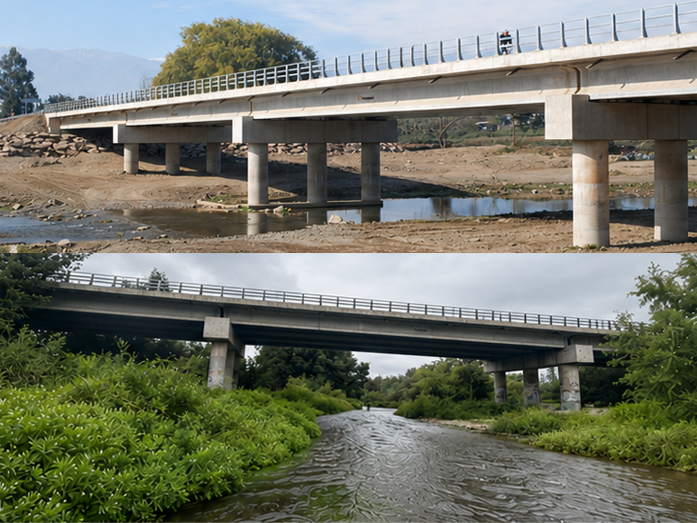
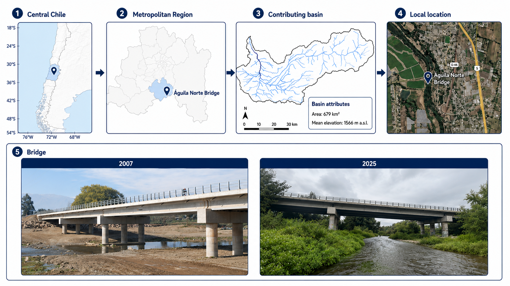
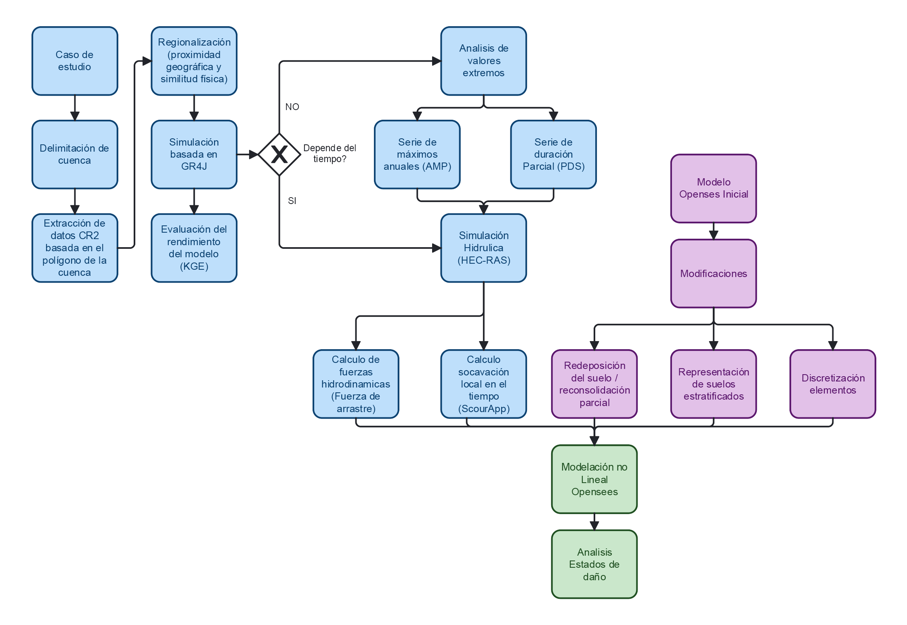

Funding
ANID · FONDECYT Initiation 11240171
March 2024–March 2027
An integrated probabilistic framework to estimate the current and future risk of bridge damage caused by flood-induced scour in Chile, combining hydraulic loading, scour hazard, structural vulnerability and exposure.
Explore project
ANID · FONDECYT Initiation 11240171
March 2024–March 2027

1 principal investigator
23 project collaborators

Águila Norte Bridge,
Metropolitan Region.

7 publications
2 dissemination · 4 open-science resources
Funding
FLOOD RESILIENCE is supported through ANID's FONDECYT Initiation in Research 2024 programme. It develops the science and tools required to estimate bridge-scour risk under multiple floods instead of relying only on post-event visual inspection or a single design scenario.
Study SiteÁguila Norte Bridge, Metropolitan
Region, central Chile.
 Basin SettingUngauged contributing basin of
679 km², with a mean elevation of 1,566 m a.s.l.
Basin SettingUngauged contributing basin of
679 km², with a mean elevation of 1,566 m a.s.l.
 Processes AssessedFlood discharge and
hydraulic loading, time-varying scour and redeposition,
nonlinear soil-pile interaction, seismic demand and
component-level damage states.
Analytical PurposeAssess time-dependent
foundation-capacity degradation and quantify engineering
demand parameters and damage states under combined hydraulic
and seismic actions.
Processes AssessedFlood discharge and
hydraulic loading, time-varying scour and redeposition,
nonlinear soil-pile interaction, seismic demand and
component-level damage states.
Analytical PurposeAssess time-dependent
foundation-capacity degradation and quantify engineering
demand parameters and damage states under combined hydraulic
and seismic actions.
 Available EvidenceThe source map compares
bridge imagery labelled 2007 and 2025.
Available EvidenceThe source map compares
bridge imagery labelled 2007 and 2025.

The framework links ungauged-basin hydrology, hydraulic loading, time-varying scour and nonlinear structural analysis to estimate component-level demand and bridge damage states.
Delineate the ungauged target basin, extract CR2 hydrometeorological variables from its polygon and estimate reference evapotranspiration for rainfall-runoff modelling.

Select donor basins using centroid distance, drainage area, mean elevation and aridity. Calibrate GR4J in MARRMoT with CAMELS-CL records, evaluate RMSE, NSE and KGE, and transfer calibrated parameters to the target basin.

Generate synthetic daily runoff, convert it from mm/day to m³/s and estimate design flows with AMS and PDS. HEC-RAS provides water depth, mean velocity, Froude number and hydrodynamic drag for the bridge.

Use the HEC-RAS hydraulic variables in ScourAPP to relate relative scour depth (Z*) to dimensionless effective flow work (W*). RESORB adds partial redeposition and reconsolidation to the same erosion time series.
Build a nonlinear OpenSees model of the superstructure, substructure and foundations. Columns and piles use fibre sections; distributed p-y, t-z and q-z springs reproduce soil–pile interaction and are updated at scoured depths.

Apply seismic records to each evolving soil–foundation–structure state. Nonlinear dynamic analyses use Newmark integration and Rayleigh damping; component-level Engineering Demand Parameters support the final damage-state assessment.
Visual synthesis of the hydrological, hydraulic, scour and nonlinear structural-analysis workflow. The diagram preserves the original Spanish labels supplied with the project material.

Preliminary displacement fields from the nonlinear bridge and soil-foundation model illustrate how scour-induced loss of pile confinement changes the system response. Select any image to inspect the result and its evidence-based interpretation. Units, load case, scour state and deformation amplification remain to be confirmed where they are not visible in the source figure.
Verified scientific publications, dissemination activities and open-science resources associated with the project.
| Publication | Year | Venue | Status | Access |
|---|---|---|---|---|
| Past, present, and future of the Hurst-Kolmogorov dynamics in Stochastics: A bibliometric analysis of the last 50 years in water resources | 2024 | Journal of Hydrology, 643, 132008 | Published |
DOI
|
| The Use of Unmanned Aerial Systems for River Monitoring: A Bibliometric Analysis Covering the Last 25 Years | 2024 | Hydrology, 11(6), 80 | Published |
DOI
|
| Assessing the performance of single and multi-criteria calibration approaches for hydrological modelling: a comparative analysis | 2025 | Hydrological Sciences Journal, 70(16), 3115–3130 | Published |
DOI
|
| Combining uncertainty quantification and entropy-inspired concepts into a single objective function for rainfall-runoff model calibration | 2025 | Hydrology and Earth System Sciences, 29, 4913–4928 | Published |
DOI
|
| SPatial Efficiency And Kmoments (SPEAK): Evaluating Spatial Consistency in (Semi)Distributed Rainfall–Runoff Models | 2026 | EGUsphere preprint | Under review |
DOI
|
| Effective science communication in the face of water crises: a community perspective on challenges and best practice in HELPING | 2026 | Hydrological Sciences Journal, 71(6), 1207–1224 | Published |
DOI
|
| Variability and persistence of scour at bridges using stochastic simulations | 2026 | EGUsphere preprint; submitted to Natural Hazards and Earth System Sciences | Under review |
DOI
|
| Activity | Year | Event | Status | Access |
|---|---|---|---|---|
| RUMI (Ratio of Uncertainty to Mutual Information): Uncertainty consideration in rainfall-runoff models calibration | 2025 | EGU General Assembly 2025 · EGU25-12388 | Presented |
DOI
|
| A time-dependent multi-hazard framework for capacity-based assessment of bridges under hydraulic and seismic processes | 2026 | EGU General Assembly 2026 · EGU26-15549 | Presented |
DOI
|
| Resource | Year | Repository | Status | Access |
|---|---|---|---|---|
| Codes and data for “SPatial Efficiency And Kmoments (SPEAK): Evaluating Spatial Consistency in (Semi)Distributed Rainfall–Runoff Models” | 2026 | OSF · Codes and data | Public repository |
DOI
|
| Codes and data for “Variability and persistence of scour at bridges using stochastic simulations” | 2025 | OSF · Codes and data | Public repository |
DOI
|
| Codes for “Combining uncertainty quantification and entropy-inspired concepts into a single objective function for rainfall-runoff model calibration” | 2024 | OSF · Code | Public repository |
DOI
|
| Data of “Past, present, and future of the Hurst-Kolmogorov dynamics in Stochastics: A bibliometric analysis of the last 50 years in water resources” | 2024 | OSF · Dataset | Public repository |
DOI
|